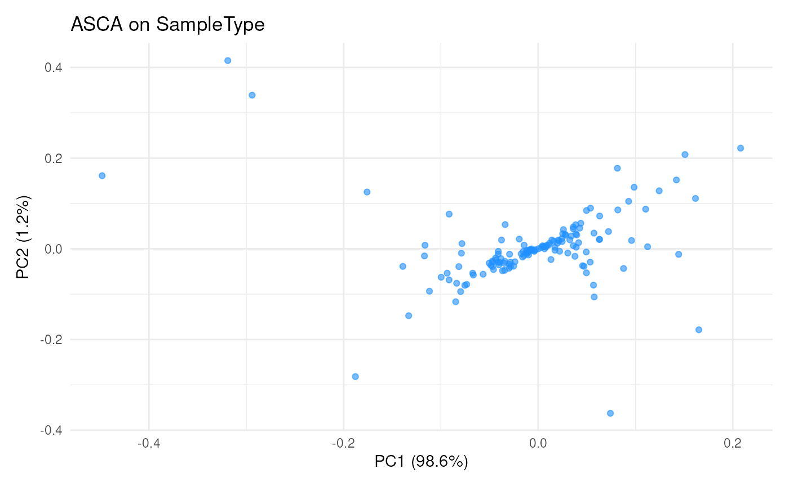
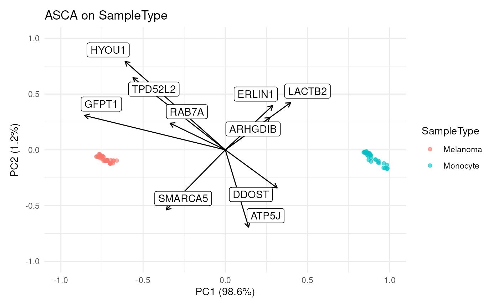

R/ScpModel-Class.R, R/ScpModel-ComponentAnalysis.R
ScpModel-ComponentAnalysis.RdComponent analysis is a powerful tool for exploring data. The package implements the ANOVA-principal component analysis extended to linear models (APCA+) and derivatives (suggested by Thiel at al. 2017). This framework is based on principal component analysis (PCA) and allows exploring the data captured by each model variable individually.
scpModelComponentMethods
scpComponentAnalysis(
object,
method = NULL,
effects = NULL,
pcaFUN = "auto",
residuals = TRUE,
unmodelled = TRUE,
name,
...
)
scpComponentAggregate(componentList, fcol, fun = colMedians, ...)
scpComponentPlot(
componentList,
comp = 1:2,
pointParams = list(),
maxLevels = NULL
)
scpComponentBiplot(
scoreList,
eigenvectorList,
comp = 1:2,
pointParams = list(),
arrowParams = list(arrow = arrow(length = unit(0.2, "cm"))),
labelParams = list(size = 2, max.overlaps = 10),
textBy = "feature",
top = 10,
maxLevels = NULL
)An object of class character of length 3.
An object that inherits from the
SingleCellExperiment class. It must contain an estimated
ScpModel in its metadata.
A character() indicating which approach(es) to use
for principal component analysis (PCA). Are allowed:
"APCA" (default), "ASCA" and/or "ASCA.E" (multiple
values are allowed). "ASCA", "APCA", "ASCA.E" are
iterated through each desired effects.
A character() indicating on which model variables
the component analysis should be performed. Default to all
modelled variables.
A character(1) indicating which function to use to
perform PCA. "nipals" will use nipals::nipals() while "svd"
will use base::svd(). If "auto", the function uses "nipals"
if the data contain missing values and "svd" otherwise.
A logical(1), if TRUE, PCA is performed on
the residual matrix as well.
A logical(1), if TRUE, PCA is performed on
the input matrix as well.
A character(1) providing the name to use to retrieve
the model results. When retrieving a model and name is
missing, the name of the first model found in object is used.
For scpComponentAnalysis(), further arguments passed
to the PCA function. For scpComponentAggregate(), further
arguments passed to QFeatures::aggregateFeatures().
A list of components analysis results. This
is typically the bySample or byFeature element of the list
returned by scpComponentAnalysis().
A character(1) providing the name of the column
to use to group features.
A function that summarizes the values for each group.
See QFeatures::aggregateFeatures() for a list of available
functions.
An integer(2) pointing to which components to fit.
The values of comp are not allowed to exceed the number of
computed components in componentList.
A list where each element is an argument that
is provided to ggplot2::geom_point(). This is useful to
change point size, transparency, or assign colour based on an
annotation (see ggplot2::aes()).
An integer(1) indicating how many colour levels
should be shown on the legend when colours are derived from a
discrete factor. If maxLevels = NULL, all levels are shown.
This parameters is useful to colour points based on a factor
with many levels that would otherwise overcrowd the legend.
A list of components analysis results. This
is typically the bySample element in the list returned by
scpComponentAnalysis().
A list of components analysis results. This
is typically the byFeature element in the list returned by
scpComponentAnalysis().
A list where each element is an argument that
is provided to ggplot2::geom_segment(). This is useful to
change arrow head style, line width, transparency, or assign
colour based on an annotation (see ggplot2::aes()). Note
that changing the 'x', 'y', 'xend', and 'yend' aesthetics is
not allowed.
A list where each element is an argument that
is provided to ggrepel::geom_label_repel(). This is useful
to change label size, transparency, or assign
colour based on an annotation (see ggplot2::aes()). Note
that changing the 'x', 'y', 'xend', and 'yend' aesthetics is
not allowed.
A character(1) indicating the name of the column
to use to label arrow heads.
An integer(1) indicating how many arrows should be
drawn. The arrows are sorted based on their size as determined
by the euclidean distance in the principal component space.
Given \(A\) a m x n matrix, PCA can be summarized as the following decomposition:
$$AA^T / (n - 1) = VLV^T$$
Where \(V\) is a m x k orthogonal matrix, that is \(VV^T = I\), with k the number of components. \(V\) is called the matrix of eigenvectors. \(L\) is the k x k diagonal matrix of eigenvalues that contains the variance associated to each component, ordered from highest to lowest variance. The unscaled PC scores are given by \(S = A^TV\).
There are 2 available algorithm to perform PCA:
nipals: The non-linear iterative partial least squares
(NIPALS) algorithm can handle missing values and
approximates classical PCA, although it does not explicitly
maximize the variance. This is implemented in nipals::nipals().
svd: The singular value decomposition (SVD) is used to perform
an exact PCA, but it cannot handle missing values. This is
implemented in base::svd().
Which algorithm to use is controlled by the pcaFUN argument, by
default ("auto"), the function automatically uses svd when
there is no missing values and nipals when there is at least
one missing value.
scpComponentAnalysis() performs a PCA on the modelling output.
What modelling output the function will use depends on the
method. The are 3 PCA approaches:
ASCA performs a PCA on the effect matrix, that is
\(A = \hat{M_f}\) where \(f\) is one of the effects in the
model. This PCA is useful to explore the modelled effects and
the relationship between different levels of a factor.
ASCA.E: perform PCA on the effect matrix, just like ASCA. The
scores are then updated by projecting the effect matrix added to
the residuals using the eigenvectors, that is
\(scores = (\hat{M_f} + \epsilon)^TV\). This PCA is useful
to explore the modelled effects while blurring these effects
with the unmodelled variability. Note however that for this
approach, the scores are no longer guaranteed to be orthogonal
and the eigenvalues are no longer meaningful. The percentage of
variation should not be interpreted.
APCA (default) performs PCA on the effect matrix plus the
residuals, that is \(A = \hat{M_f} + \epsilon\). This PCA
is useful to explore the modelled effects in relation with the
unmodelled variability that is remaining in the residuals.
Available methods are listed in scpModelComponentMethods.
Note that for all three methods, a PCA on the residual matrix is
also performed when residuals = TRUE, that is
\(A = \epsilon = Y - \hat{\beta}X^T\). A PCA on the residuals is
useful to explore residual effects that are not captured by any
effect in the model. Similarly, a PCA on the input data matrix,
that is on the data before modelling is also performed when
unmodelled = TRUE, that is \(A = Y\).
scpComponentAnalysis() always returns a list with 2 elements.
The first element, bySample is a list where each element
contains the PC scores for the desired model variable(s). The
second element, byFeature is a list where each element
contains the eigenvectors for the desired model variable(s).
scpAnnotateResults() adds annotations to the component
analysis results. The annotations are added to all elements of the
list returned by scpComponentAnalysis(). See the associated man
page for more information.
scpComponentPlot() takes one of the two elements of the list
generated by scpComponentAnalysis() and returns a list of
ggplot2 scatter plots. Commonly, the first two components,
that bear most of the variance, are explored for visualization,
but other components can be explored as well thanks to the comp
argument. Each point represents either a sample or a feature,
depending on the provided component analysis results
(see examples). Change the point aesthetics by providing ggplot
arguments in a list (see examples).
scpComponentBiplot() simultaneously explores the PC scores
(sample-space) and the eigenvectors (feature-space). Scores are
shown as points while eigenvectors are shown as arrows. Point
aesthetics and arrow aesthetics can be controlled with the
pointParams and the arrowParams arguments, respectively.
Moreover, arrows are also labelled and label aesthetics can be
controlled using labelParams and textBy. Plotting all
eigenvectors as arrows leads to overcrowded plots. You can limit the plotting to
the top longest arrows (default to the top 10) as defined by the
distance on the two selected PCs.
scpComponentAggregate() offers functionality to aggregate the
results from multiple features. This can be used to obtain, for
example, component analysis results for proteins when modelling at
the peptide level. The approach is inspired from
scuttle::aggregateAcrossCells()
and combines, for each group, multiple values for each component
using QFeatures::aggregateFeatures(). By default, values are
aggregated using the median, but QFeatures offers other methods
as well. The annotation of the component results are automatically
aggregated as well. See the aggregateFeatures() man page for
more information on available methods and expected behavior.
Thiel, Michel, Baptiste Féraud, and Bernadette Govaerts. 2017. "ASCA+ and APCA+: Extensions of ASCA and APCA in the Analysis of Unbalanced Multifactorial Designs." Journal of Chemometrics 31 (6): e2895.
ScpModel-Workflow to run a model on SCP data upstream of component analysis.
The nipals::nipals() function and package for detailed
information about the algorithm and associated parameters.
The ggplot2::ggplot() functions and associated tutorials to
manipulate and save the visualization output
scpAnnotateResults() to annotate component analysis results.
library("patchwork")
library("ggplot2")
data("leduc_minimal")
leduc_minimal$cell <- rownames(colData(leduc_minimal))
####---- Run component analysis ----####
(pcs <- scpComponentAnalysis(
leduc_minimal, method = "ASCA", effects = "SampleType",
pcaFUN = "auto", residuals = FALSE, unmodelled = FALSE
))
#> List of length 2
#> names(2): bySample byFeature
####---- Annotate results ----####
## Add cell annotation available from the colData
bySamplePCs <- scpAnnotateResults(
pcs$bySample, colData(leduc_minimal), by = "cell"
)
## Add peptide annotations available from the rowData
byFeaturePCs <- scpAnnotateResults(
pcs$byFeature, rowData(leduc_minimal),
by = "feature", by2 = "Sequence"
)
####---- Plot results ----####
## Plot result in cell-space, ie each dot is a cell
scpComponentPlot(
bySamplePCs,
pointParams = list( ## ggplot arguments
aes(colour = SampleType, shape = lcbatch),
alpha = 0.6
)
) |>
wrap_plots(guides = "collect")
## Plot result in peptide-space, ie each dot is a peptide
scpComponentPlot(
byFeaturePCs,
pointParams = list(colour = "dodgerblue", alpha = 0.6)
) |>
wrap_plots(guides = "collect")

## Plot both
scpComponentBiplot(
bySamplePCs, byFeaturePCs,
pointParams = list(aes(colour = SampleType), alpha = 0.6),
labelParams = list(max.overlaps = 20),
textBy = "gene"
) |>
wrap_plots(guides = "collect")

####---- Aggregate results ----####
## Aggregate to protein-level results
byProteinPCs <- scpComponentAggregate(
byFeaturePCs, fcol = "Leading.razor.protein.id"
)
#> Components may no longer be orthogonal after aggregation.
## Plot result in protein-space, ie each dot is a protein
scpComponentPlot(
byProteinPCs,
pointParams = list(colour = "firebrick", alpha = 0.6)
) |>
wrap_plots(guides = "collect")